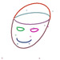
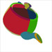
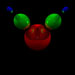
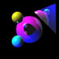
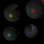
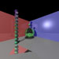
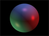
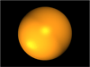
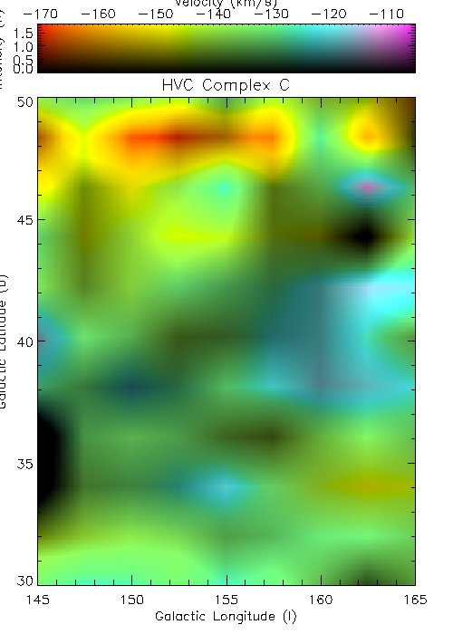

This is my portfolio, demonstrating my work. My expertise lies in back-end system development, thus a significant part of my work is best demonstrated through applications. This portfolio attempts to serve that purpose by providing a gateway to projects I have worked on. Some projects are embedded into this portfolio, others can best be experienced through visiting their respective online locations, requiring an internet connection.
Thank you for taking the time to peruse my work. Please do not hesitate to contact me with any questions regarding my education, work experience or projects.
Rockband Vision is a computer vision system capable of playing the Rockband console game autonomously. Rockband is an interactive band simulator that allows human players to play music according to on-screen musical notation using custom musical instruments. Our system is capable of interpreting the Rockband video feed presented to human players: it is able to read the musical notation in the feed and manipulate the game's guitar input to play the game. This project relied on a breadth of knowledge from the computer graphics, numerical analysis and physical computing areas. We present it as our final project for Berkeley's Computer Graphics course.
This project served as an exploration of curved surface rendering. Input files describing Bezier patches are interpolated using DeCasteljau evaluation into a cloud of points, algebraically grouped into triangles, and optionally adaptively tessellated further until a measure of flatness is satisfied.
Further details, as well as examples of output, can be found on my Surfaces project website.
|  | Bezier Curve Prototype (Java applet): I experimented with Bezier curves by prototyping a Java applet that provides a simple editing interface to create these curves. (Time to implement: approx. 90 minutes) |
|  | Bezier Surface Prototype (Java applet): This applet attempts to subdivide a set of bezier patches into triangles, allowing me to experiment with interpolation methods for this project. (Time to implement: approx. 120 minutes) |
I implemented a full-featured Raytracer that renders a description of a scene into an image. The basic premise was to use no external libraries whatsoever - I built each component from the ground up. A full description of this project, including the design methodology, can be found on my Raytracer project website. The Raytracer demonstrates raytracing through the following aspects:
- .OBJ file parsing as input
- Defining of custom material properties.
- Defining of custom directional and point lights
- Efficient intersection tests for spheres and triangles
- Phong shading of objects
- Matrix transforms of objects
|  |  |  |  |
{kind=link}
{kind=link}
{kind=link}
{kind=link}
I implemented the Phong shading algorithm as a first interaction on a pixel level with OpenGL. The Phong calculation is done over a sphere, and my program calculates the pixel color value over the surface. This served as an excellent entry to using OpenGL as display API and play with implementing shading algorithms that interpret normals, colors and color mixing in various ways. More information can be found on my Shader project website.
|  |  |
{kind=link}
{kind=link}
Data structures play a crucial role in Computer Graphics. I implemented a Quadtree structure to store points in 2D space, allowing simulation of collisions in a collection on the order of 10 000 points. A default environment is populated with a random distribution of particles, each with a random velocity vector. The simulation optimizes itself by calculating the next point in time at which two particles will collide, and moving the simulation of the environment to that point. Collisions are fully elastic and calculated using a semi-non-deterministic physics engine.
I interned at Yahoo! Research Berkeley for the duration of 2007. I was a member of the Media and Community team, responsible for the back-end Flash video server, as well as synchronous video sharing applications built on top of the platform I developed. The video server platform was based around the Red5 video server, and our prototypes, codenamed Zync and Webzync, went on to be intergrated into Yahoo! Messenger and Yahoo! Live.
Zync is the first incarnation of our video sharing concept. Zync comes in the form of a Yahoo! Messenger plugin that can play online video. By dropping a video into Zync, the two participants in the conversation sees a synchronized stream of video between both parties - in other words, each person received the same frame of video at the same point in time. This mimics the behaviour of having several people watching the same television - if one participant decides to, for example, skip ahead in the video, all participants are involved.
When I joined the research team, they were using a slightly modified HTTP server to progressively download video to the client. I started working on the Red5 Open Source Flash video server as an alternative to the in-house server. Red5 had serious limitations - seeking was slow and used excessive disk space, audio support was minimal, and there was no abstraction between files on disk and video streams. I solved each of these issues and Red5 became the prime platform for the research lab's video prototypes.
2draw is an online art space, providing drawing tools and a social hub for amateur and professional artists. I joined the 2draw team (currently 4 in number) during summer 2008. With such a small team we are all involved with the many facets of the site. I have been responsible for server maintenance and overhaul and web framework development. I have also taken the position as blog editor, responsible for regular articles on art, design and inspiration.
I have participated in 4 of Yahoo's hackdays - 24 hour programming events focused on innovation and rapid execution of ideas. My projects include:
- The Schedulator - an AJAX schedule organizer for Berkeley students that plugs into the campus class schedule catalog
- MusicHydra - A location-aware cellphone app that build custom playlists of music according to the music preferences of people near you.
- KitchenZync - A twist on the original Zync application focused around coopertive cooking! Follow a master chef with your friends in creating edible masterpieces, regardless of whether your friend is next door or on another continent. Think your crepe looks good? Then show it off to the other participants!
My first forage into short films focused on my love of extreme sports. I find that the human drive to challenge Nature creates a most facinating scene for exploration through the medium of film.
The SYO is the premier orchestra for high school students in South Africa. I was one of a 3 member team that filmed and authored 5 DVDs featuring their live performances. This included live audio and video capture, non-linear editing and DVD authoring. The final DVD was used as a successful application the the Vancouver Youth Orchestra's conductor position.
I am a member of the research team led Professor Alex Filippenko responsible for the most discoveries of new supernovae in nearby galaxies each year. I am a certified observer, and have used the Nickel 1m telescope at Lick Observatory, on top of Mt. Hamilton extensively for Supernovae photometry follow-ups.
Official website.
Press Release.
We present a report on activities concerning radioastronomy bench measurements performed during the first 3 weeks of enrollment in Astronomy 121 at UC Berkeley. We performed several experiments to become acquainted with the equipment and signal processing involved in the Radio Astronomy Lab. This document focuses on four main areas: Fourier transforms, investigating the Nyquist frequency1, investigating Dual Sideband Mixers, and phase detection using mixers. Each area depends heavily and contains information on Discreet Fourier Transforms, IDL programming & organization, and the UNIX operating system. This document strives to be an overview of each of these sections in context of the main areas.
We present a report on the activities concerning the radioastronomy technique known as interferometry. We first discuss coordinate systems, coordinate system conversions and precession. We prelude our technical findings with an exhaustive discussion on radio interferometry theory, in which we cover interference, point source response, and notes on our technical equipment. The main body of the report consists of using interferometry to measure accurate declinations of point sources and accurate angular diameters of extended sources. We cover both the theory and practice of these two fundamental uses of interferometry. Finally, we present brute force and non-linear least squares techniques. We studied the sun and moon as our extended sources and the Crab Nebula as a point source with UC Berkeley's undergraduate interferometer.
This lab report covers several overlapping topics and concludes with observations of the 21-cm Hydrogen line. We examine transmission lines and waveguides to further our knowledge of the electronics we need to do our observations with.
{kind=link}
We attempted to use natural hydrogen emission to map a high velocity cloud falling into our galaxy at speeds in the region of 120 km/s to 170 km/s. We went to extensive trouble to track and predict our extended object across the sky, and spent approximately 62 hours on observations alone. Our object had peak signals of about 2 Kelvin, forcing us to use several procedures to minimize noise and tease out our signal from the background radiation and equipment noise. We used Gaussian fitting and Fourier filtering along with the spectrum calibration process to successfully reduce all our observations to useful velocity and intensity values, which we put through an interpolation and resizing process to successfully generate color maps of our object.
See the map we created of the HVC C complex cloud:
|  |